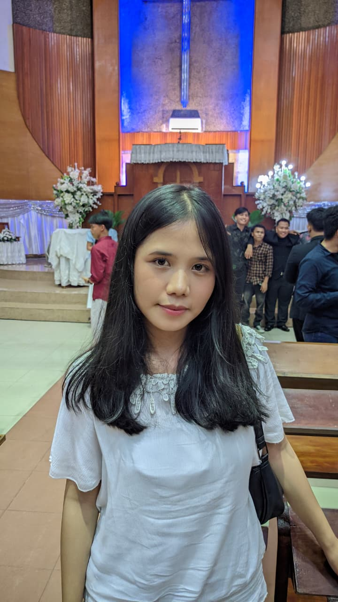
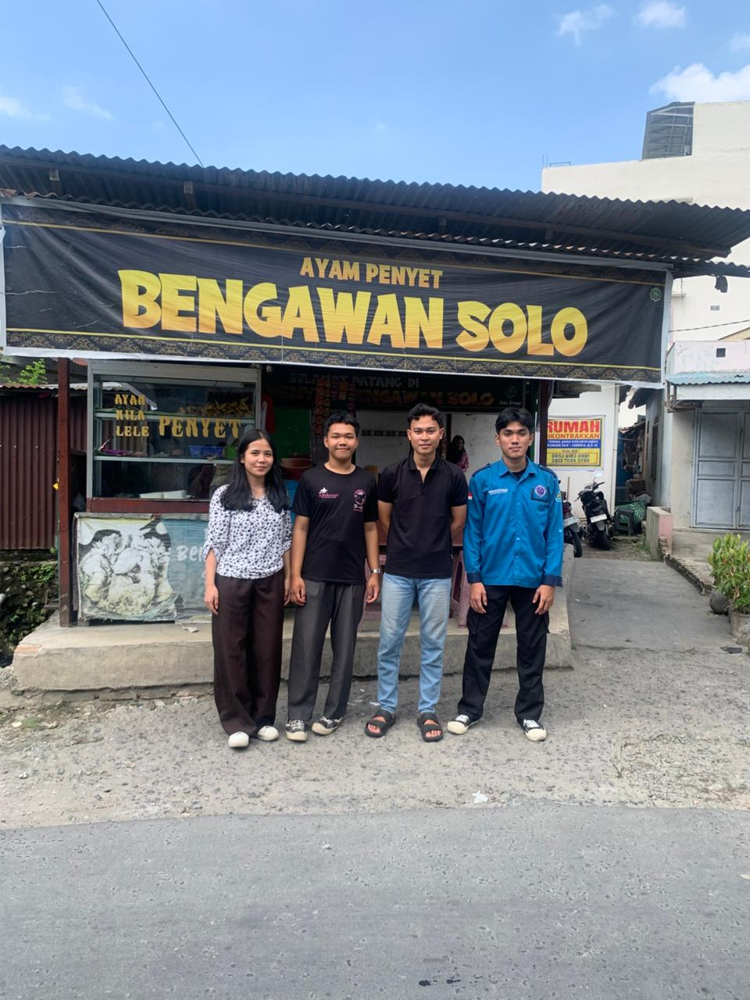
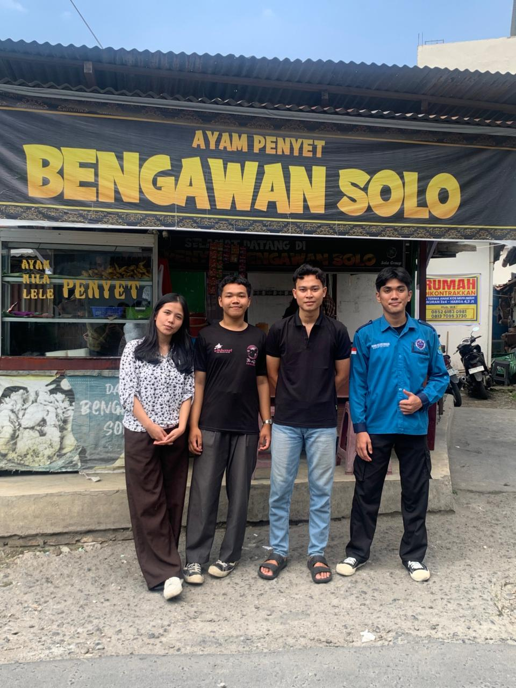
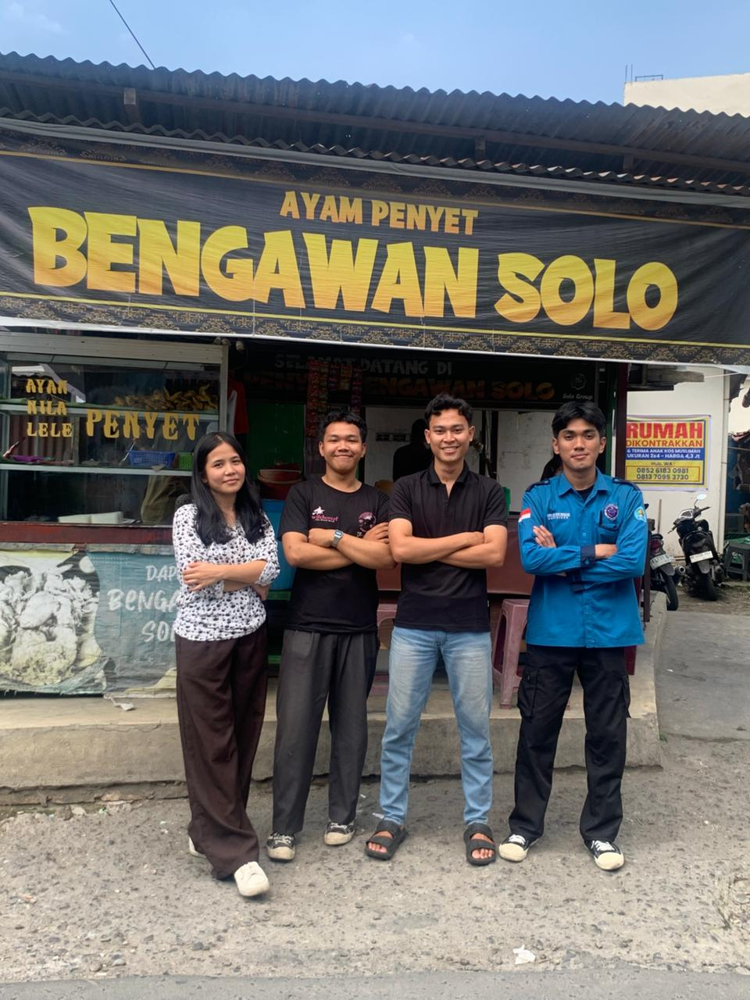

Bengawan Solo merupakan website pemesanan makanan yang dibuat untuk mempermudah pelanggan dalam melihat menu, memilih makanan, dan melakukan pemesanan secara lebih praktis.
Website ini menghadirkan fitur modern seperti keranjang belanja, invoice otomatis, dashboard admin sederhana, pencarian menu, filter kategori, hingga pilihan metode pembayaran.
Dengan tampilan yang sederhana namun modern, Bengawan Solo dirancang agar mudah digunakan oleh semua pelanggan.
Website ini dikembangkan sebagai project website penjualan makanan dengan tampilan modern dan fitur interaktif untuk meningkatkan pengalaman pengguna.
Website Bengawan Solo dikembangkan oleh tim mahasiswa dengan semangat menciptakan pengalaman pemesanan makanan yang modern dan interaktif.
Bertanggung jawab dalam pengembangan tampilan website, desain antarmuka, dan pengalaman pengguna.

Bertanggung jawab dalam dokumentasi project, pengujian sistem, dan pengembangan tampilan modern.
Bertanggung jawab dalam pengembangan sistem checkout, invoice, dan pengelolaan data pesanan.
Berikut merupakan dokumentasi dengan mitra Bengawan Solo.


